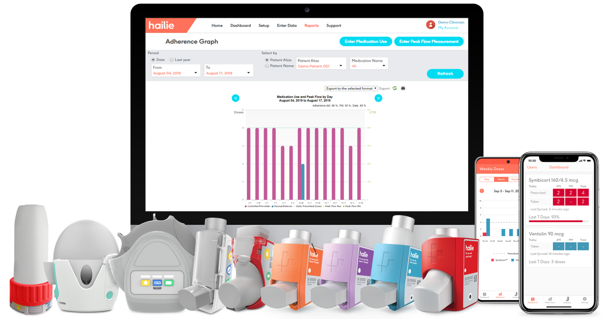

An interactive smart board, also known as an electronic whiteboard, is a classroom tool that allows images from a computer screen to be displayed onto a classroom board using a digital projector. The teacher or a student can “interact” with the images directly on the screen using a tool or even a finger.